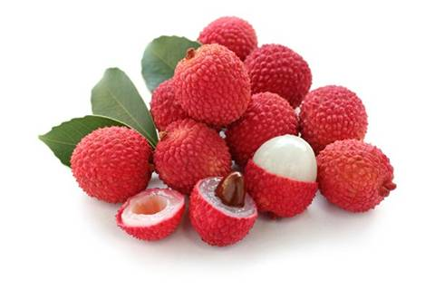
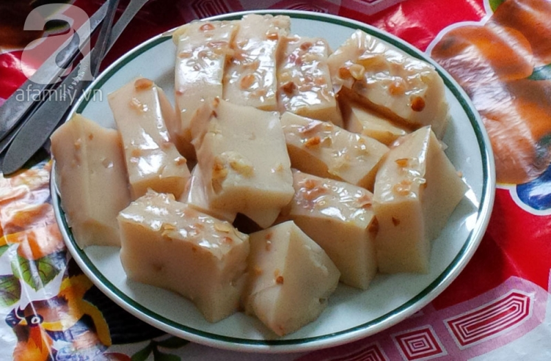
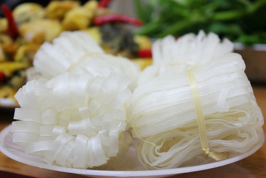
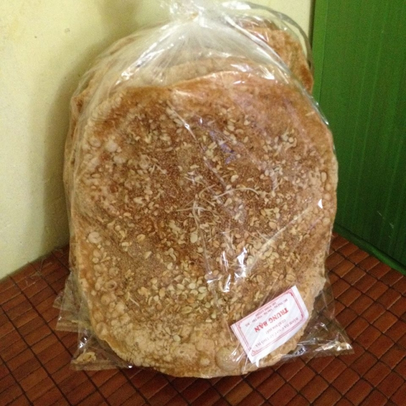
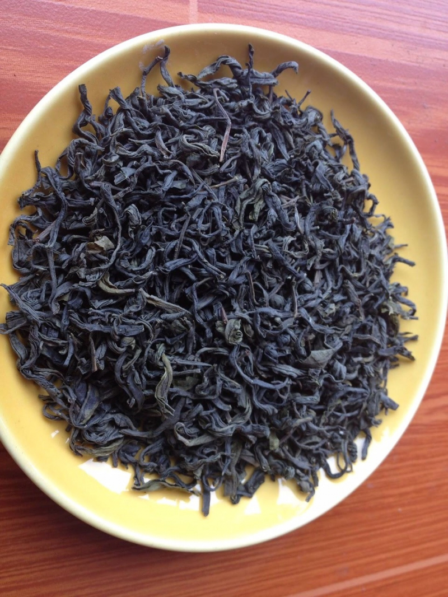

Bạn có phải là một người thích du lịch? Bạn có thích ăn những món ngon ở khắp mọi nơi. Hãy đến với Bắc Giang, một mảnh đất địa linh với rất nhiều danh lam thắng cảnh và món ăn ngon. Các bạn hãy cùng toplist điểm qua một số món ngon của Bắc Giang nhé.
Nhắc tới đặc sản Bắc Giang bạn sẽ không thể không nhắc tới vải thiều. Vải thiều được trồng nhiều nhất ở vùng Lục Ngạn - Bắc Giang. Quả vải thiều Lục Ngạn có đặc điểm khi chín có màu đỏ, vỏ mỏng, hạt nhỏ, cùi dày khi ăn có vị ngọt đậm, hương vị đặc trưng của vải thiều là điểm khiến bạn mê ly vùng đất Bắc Giang, ăn mãi không biết chán. Ngoài vải tươi ở đây người dân còn sấy khô vải để giữ được hương vị của vải mà không làm mất đi vị ngọt đặc trưng.
Vải thiều Bắc Giang
Nếu ai có dịp thưởng thức món bánh đúc ở thôn Đồng Quan, xã Đồng Sơn, Bắc Giang chắc hẳn đều lưu lại trong mình dư vị của một món ăn dân dã, đậm đà hương vị quê hương, không nhiều nơi có được. Bánh đúc làng Đồng Quan được nhiều người yêu thích bởi bánh vừa dẻo, vừa mát. Miếng bánh đúc trắng ngần, bóng mịn, lấm tấm mấy hạt lạc bùi bùi, giòn sần sật. Ăn bánh đúc phải chấm với tương bần, cái hương vị đó tất cả hòa quyện thành vị quê nồng đượm.
Bánh đúc Đồng Quan
Nói tới mỳ Chũ thì sẽ không ở đâu có thể có và ngon như ở Bắc Giang. Mỳ Chũ được làm từ gạo Bao Thai Hồng nên sợi mì dẻo, mịn. Và đặc biệt giống lúa Bao Thai Hồng phải được canh tác trên đất đồi Chũ chứ không phải trồng ở dưới đồng. Mỳ Chũ được tráng mỏng, cắt thành sợi như bánh phở, phơi khô và buộc thành từng bó nhỏ, thường được sử dụng như mì ăn liền, có lẽ cách chế biến ngon nhất nên ăn mỳ Chũ trong bữa lẩu.
Mỳ Chũ
Bánh đa Thổ Hà được làm tại xã Vân Hà huyện Việt Yên tỉnh Bắc Giang. Ở đây người dân làm bánh đa từ năm 1990 và giờ đã trở thành đặc sản nổi tiếng của Bắc Giang. Bánh đa Thổ Hà nổi tiếng nhờ vị thơm ngon từ nguyên liệu được chọn lọc kỹ càng. Có 2 loại bánh là bánh đa nướng và bánh đa nem. Bánh đa nướng có màu vàng rộ, giòn tan khi ăn có vị thơm bùi của vừng, của lạc. Còn bánh đa nem có màu trắng vừa phải, mềm dẻo, dai và ngon có đường kính khoảng 40cm.
Bánh đa thổ hà
Từ trước đến nay, người dân Việt Nam đã quen với cái tên chè Thái Nguyên, chè Shan tuyết Suối Giàng. Mấy ai biết rằng, trên đất Sơn Động, Bắc Giang cũng có một loại chè thơm ngon không kém, có tên là Bát Tiên. Chè Bát Tiên không có lắng cặn và không làm mốc, ố, hay vàng ấm chén cho nên được thì trường ưa chuộng. Với điều kiện thổ nhưỡng và khí hậu phù hợp nên giống chè Bát Tiên nơi đây phát triển rất tốt, hương thơm hoa nhài đặc trưng lại có tác dụng thanh nhiệt. Trong cái thời tiết se se lạnh của nơi miền cao, được thưởng thức chén chè nóng tỏa khói hương lan tỏa mang mùi thơm rất riêng không thể nhầm lẫn với bất kì một loại chè nào khác quả là một điều thích thú vô cùng. Màu nước chè Bát Tiên Sơn Động trong xanh rất đẹp, hương dịu nhẹ thoang thoảng, ấy mà nhấp một ngụm nhỏ lại có thể cảm nhận được sự đậm đà quyến luyến nơi đầu lưỡi
Chè Bát Tiên Sơn Động
Vải Thiều
Nhắc tới đặc sản Bắc Giang bạn sẽ không thể không nhắc tới vải thiều. Vải thiều được trồng nhiều nhất ở vùng Lục Ngạn - Bắc Giang...
Xem chi tiếtBánh đúc Đồng Quan
Nếu ai có dịp thưởng thức món bánh đúc ở thôn Đồng Quan, xã Đồng Sơn, Bắc Giang chắc hẳn đều lưu lại trong mình dư vị của một món ăn dân dã...
xem chi tiếtMỳ chũ
Nói tới mỳ Chũ thì sẽ không ở đâu có thể có và ngon như ở Bắc Giang. Mỳ Chũ được làm từ gạo Bao Thai Hồng nên sợi mì dẻo, mịn...
xem chi tiếtBánh đa Thổ Hà
Bánh đa Thổ Hà được làm tại xã Vân Hà huyện Việt Yên tỉnh Bắc Giang. Ở đây người dân làm bánh đa từ năm 1990 và giờ...
xem chi tiếtChè Bát Tiên Sơn Động
Từ trước đến nay, người dân Việt Nam đã quen với cái tên chè Thái Nguyên, chè Shan tuyết Suối Giàng. Mấy ai biết rằng, trên đất Sơn Động...
xem chi tiết